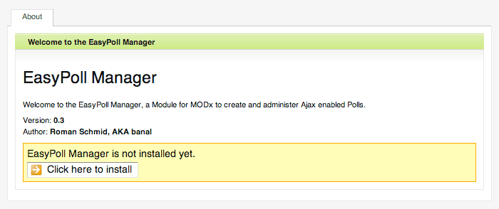
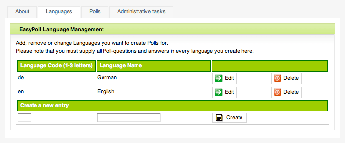
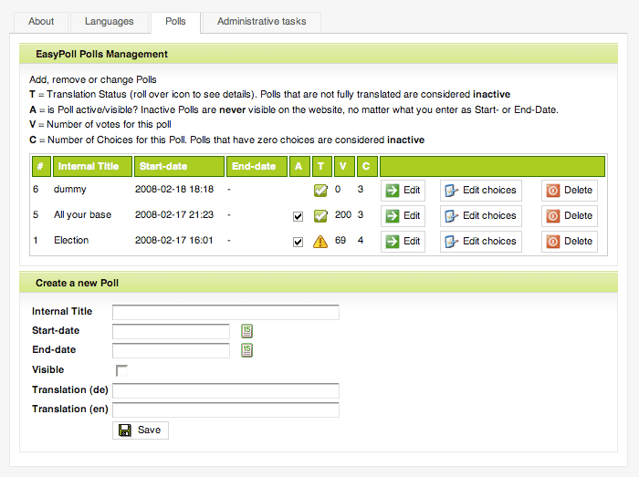
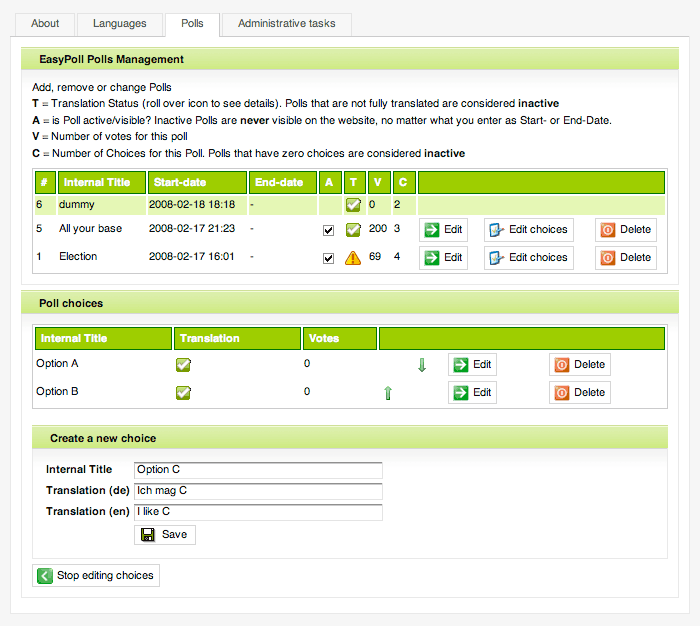

EasyPoll is a Module/Snippet combination for MODx. Developed by banal, inspired by the Poll Module by garryn.
Resource Site: http://modxcms.com/EasyPoll-1873.html
Forum thread for support/feedback: http://modxcms.com/forums/index.php?topic=22981
The EasyPoll Module, Snippet and all included Classes/Files are licensed under the GNU General Public License, version 2. Please read the license.txt that is bundled with this software or visit: www.gnu.org/licenses/gpl-2.0.html
If you're reading this, you have probably already downloaded and unpacked the EasyPoll_0.3.1.zip File. If not, please do so. Inside the unpacked folder, you'll find a subdirectory named modules and one named snippets. Please copy modules/EasyPoll to your MODx /assets/modules directory. Do the same for the snippets/EasyPoll folder (move it to your snippets directory). For a detailed documentation of the EasyPoll snippet, read documentation.html inside the snippets/EasyPoll folder.
To install the module, log in to the MODx Manager and navigate to Modules > Manage Modules. Click on "New Module" and enter "EasyPoll" as Module name. Enter "Version 0.3.1" as Description. Now copy the contents of modules/EasyPoll/module.php into the Textarea. Make sure to remove the <?php tag at the beginning and the ?> tag at the end of the Code. Otherwise, the Module will throw a parse Error upon running.
After saving your changes, you should see the newly created EasyPoll Module in your list of installed Modules. Click on the Box Icon to the left of the Module name and select Run module from the context menu. If everything went fine, you should now see a screen as shown in the following Screenshot:

Now click the Button to complete the installation of the EasyPoll Manager. The setup will then attempt to create all needed Database Tables. On most machines, this should work just fine. Problems might occur if you don't have sufficient rights to create Database Tables or if the /modules/EasyPoll/setup.sql file is not readable by the install script. If the automatic setup doesn't work for you, you have to create the Database Tables manually. Read the comments in the setup.sql file to get some indication as of how to do this.
Once your setup is complete, delete the /modules/EasyPoll/setup.sql File from the server. You won't need it anymore. This concludes the EasyPoll Module installation.
People encountered Errors when backing up the Database with the MODx Manager and tried to restore it to another Database. This was caused by foreign key contraints which were used in EasyPoll prior to Version 0.3.
To migrate an existing EasyPoll installation to 0.3, please run the follwing SQL Commands on your Database (they will remove the existing foreign key constraints). The foreign key logic has been externalized into the application which is not a good design choice but should be easier to migrate.
Please make sure to replace modx_ with your own Table prefix if necessary!
ALTER TABLE `modx_ep_choice` DROP INDEX `pollFK`, DROP FOREIGN KEY `pollFK`; ALTER TABLE `modx_ep_translation` DROP INDEX `transLangFK`, DROP INDEX `transPollFK`, DROP FOREIGN KEY `transLangFK`, DROP FOREIGN KEY `transPollFK`; ALTER TABLE `modx_ep_userip` DROP INDEX `ipPollFK`, DROP FOREIGN KEY `ipPollFK`;
The EasyPoll Module was developed for the use in multilingual Websites. You can create Polls for as many Languages as you like. First you have to "create" the Languages you wish to create Polls for. Click on the Languages Tab. You should see something like this:

The Screenshot shows the Language Management Screen with two defined Languages. Creation, modification and deletion of Languages should be self-explanatory.
Navigate to the Polls Tab by clicking it. This is probably the part of the EasyPoll Manager you'll use the most. It should look similar to the Screenshot below (if you're running a fresh install, the list of polls will of course be empty).

The upper section of the Screen shows your list of polls. The polls are sorted by Start-date (descending). The lower section either shows the form fields to create a new poll or the contents of a selected poll (by clicking on the Edit button in the poll list). Here's a short description of the form-fields:
After you created a poll, you can add choices to it. To do so, click the Edit choices button.

The process of editing Choices is very much the same as for polls. A choice only consists of a Internal Title and the Translations. You can sort your poll choices with the up- and down-arrows in the choices list.
After you created a poll and some choices for it, you should be able to see it on your Website (given that the EasyPoll Snippet is correctly configured and placed in one of your Documents. See the EasyPoll Snippet documentation for further instructions).
Please note: The following conditions must be fulfilled, before a poll can be displayed on your Website
Currently you can only remove existing IP Locks. This will remove all logged IP Addresses from your Database.